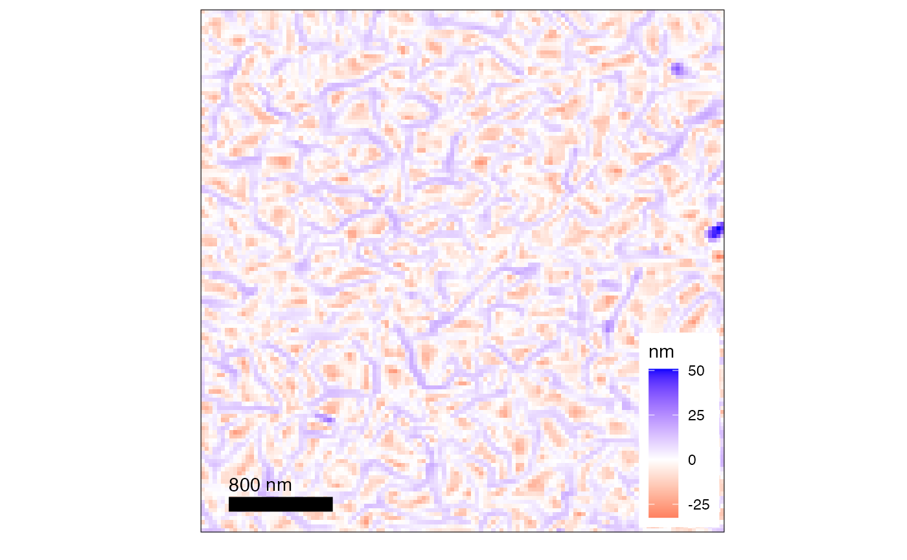

plot.AFMdata.RdBy default, trims 1 percent of the outliers in height data
# S3 method for AFMdata
plot(
x,
no = 1,
mpt = NA,
graphType = 1,
trimPeaks = 0.01,
addLines = FALSE,
redBlue = FALSE,
verbose = FALSE,
quiet = FALSE,
...
)AFMdata object
channel number of the image
midpoint for coloring
1 = graph with legend outside, 2 = square graph with line bar, 3 = plain graph
value from 0 to 1, where 0=trim 0% and 1=trim 100% of data points, generally a value less than 0.01 is useful to elevate the contrast of the image
if TRUE lines from obj are added to graph, lines can be added with AFM.lineProfile() for example
if TRUE output red / blue color scheme
if TRUE it outputs additional information.
if TRUE then no output at all
other arguments
ggplot graph
d = AFM.import(AFM.getSampleImages(type='ibw')[1])
plot(d, graphType=2)
#> Graphing: HeightRetrace
